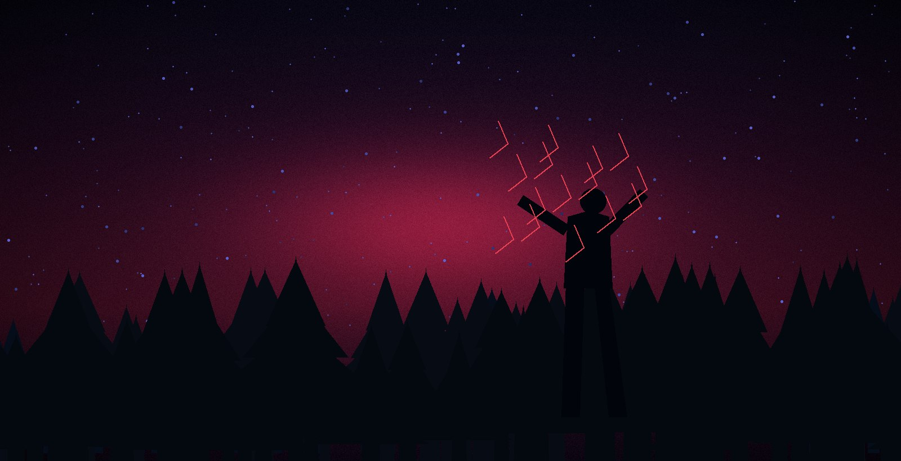
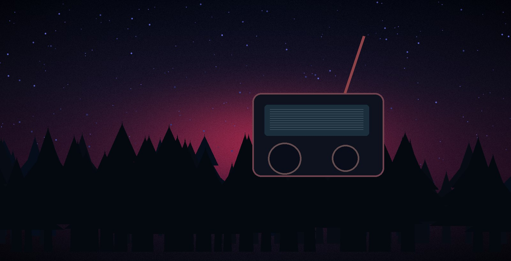
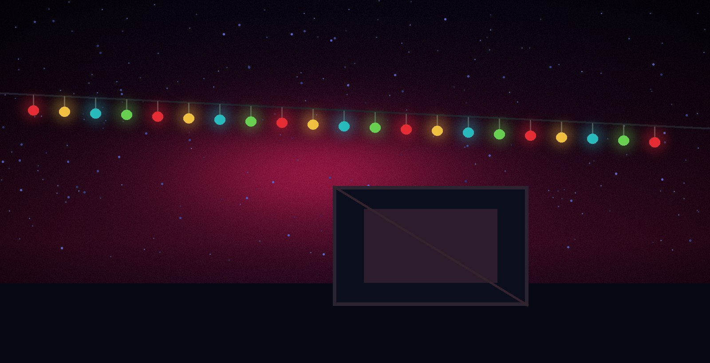

01 / EXPERIMENTOA garota extraordinária
Onze (Eleven)
Interpretada por Millie Bobby Brown. Uma jovem com poderes telecinéticos que encontra amizade e acolhimento no grupo de Hawkins.
PODERES
CASO 011 / HAWKINS, INDIANA
O desconhecido está mais perto do que você imagina.
Um desaparecimento misterioso. Experimentos secretos. Um grupo de amigos disposto a atravessar qualquer limite para descobrir a verdade.
01 / O COMEÇO DE TUDO
Uma cidade pequena. Um mistério impossível de ignorar.
Ambientada principalmente na cidade fictícia de Hawkins, nos Estados Unidos, Stranger Things acompanha um grupo de amigos cuja rotina muda quando o jovem Will Byers desaparece sem explicação.
Enquanto a família e a polícia iniciam as buscas, os amigos conhecem Onze, uma garota com habilidades especiais. Aos poucos, descobrem que estranhos experimentos e uma dimensão paralela, conhecida como Mundo Invertido, estão conectados ao desaparecimento.
Amizade, coragem e família se tornam essenciais quando o impossível invade o cotidiano.
02 / ARQUIVO DE PERSONAGENS
Conheça alguns dos nomes centrais da história.

01 / EXPERIMENTOInterpretada por Millie Bobby Brown. Uma jovem com poderes telecinéticos que encontra amizade e acolhimento no grupo de Hawkins.

02 / O GRUPOInterpretado por Gaten Matarazzo. Curioso e criativo, usa o humor, a ciência e a lealdade para ajudar seus amigos.

03 / A FAMÍLIAInterpretada por Winona Ryder. Não desiste de encontrar seu filho Will e enfrenta o inexplicável para proteger a família.
✦ Também fazem parte do elenco principal: Finn Wolfhard, Caleb McLaughlin, Noah Schnapp e David Harbour.
03 / EVIDÊNCIAS VISUAIS
Três imagens. Um mesmo mistério.
As imagens desta página são ilustrações originais criadas para fins acadêmicos; não são fotografias oficiais da série.
04 / INFORMAÇÕES DE PRODUÇÃO
Uma história criada pelos irmãos Duffer, conhecida por misturar aventura, ficção científica e suspense.